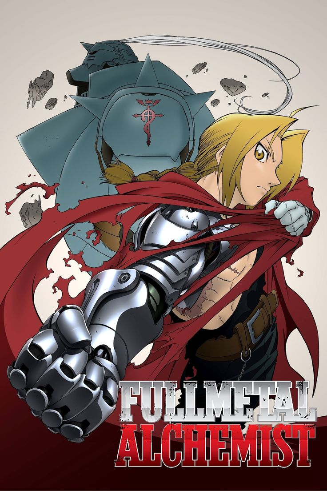
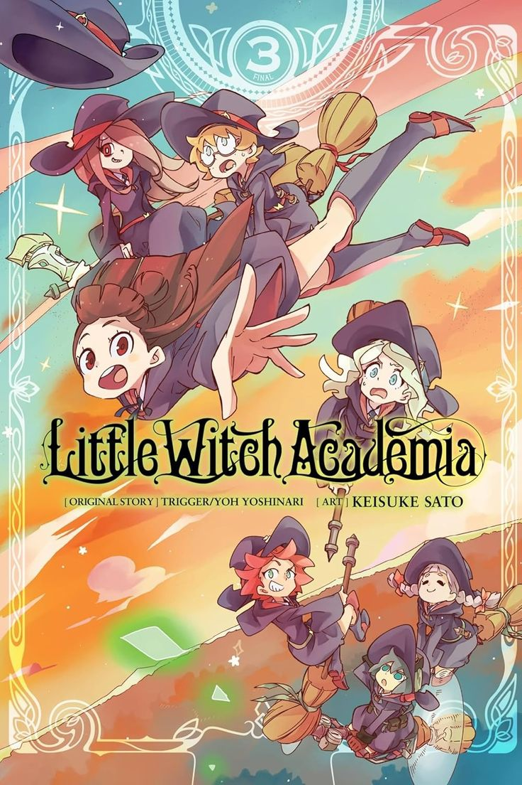
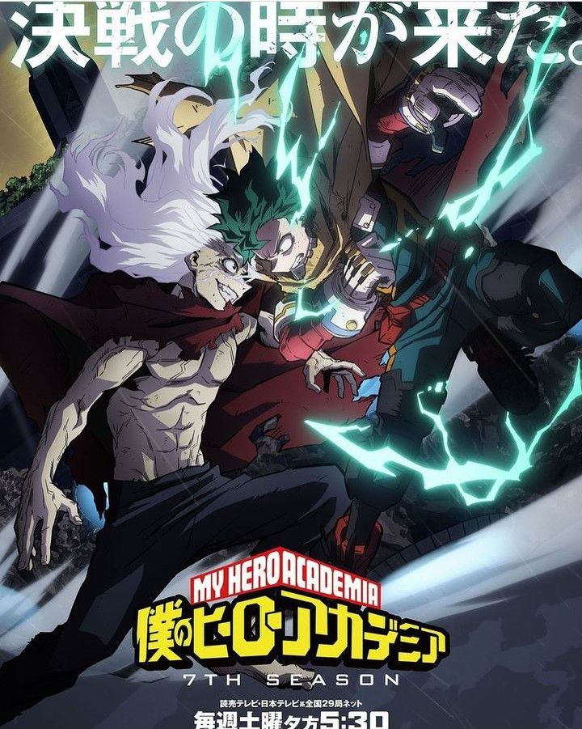
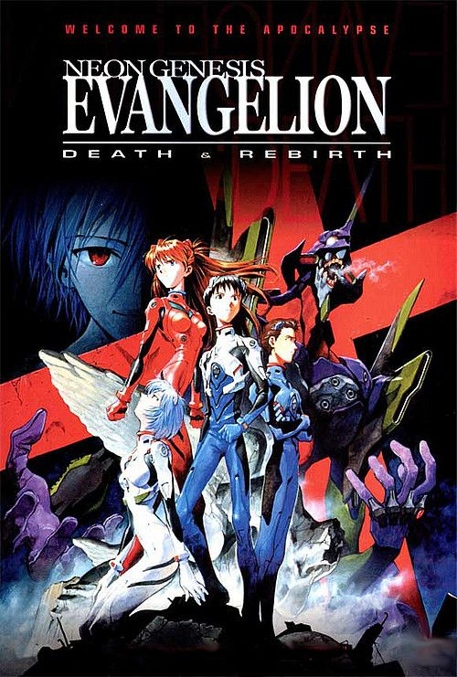
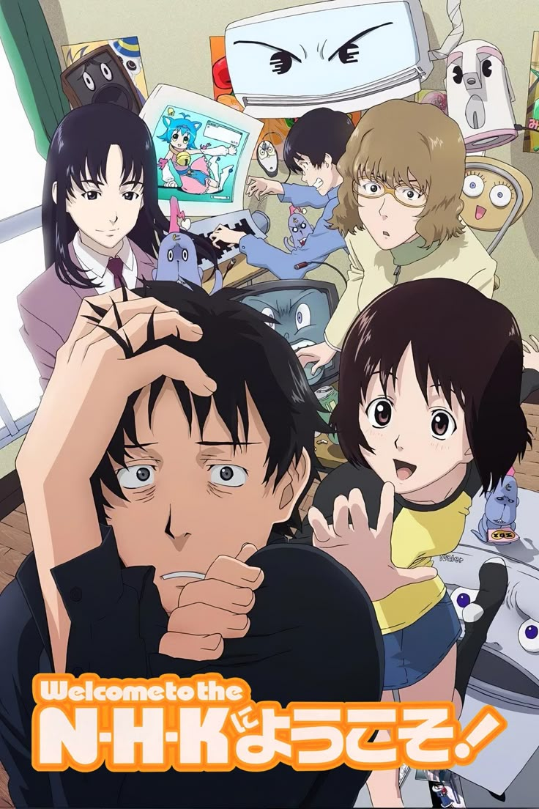

Filtrar Dimensões
Refine sua busca no multiverso DenyAnimeHub!
Catálogo Completo
A - E


F - J




K - O






P - T


Sentai Daishikkaku
7.4 2024 Leg


U - Z



Conecte-se à Comunidade
Junte-se ao nosso servidor no Discord para discussões, eventos e muito mais!
Entrar no QG DenyAnimeHub
Onde a Akatsuki se reúne online!
Título do Anime
N/A N/A N/A
Trailer
Sinopse
Descrição do anime...
Detalhes
Classificação: N/A
Ano: N/A
Idioma: N/A